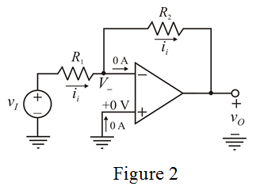

Apply Kirchhoff’s voltage law to the feedback resistor loop.
Substitute for  in the equation.
in the equation.
…… (2)
Draw the circuit diagram of inverting amplifier.
Re-draw the circuit diagram with node voltages and branch currents.

From Figure 2, determine the open-loop gain of the amplifier.
…… (1)
Apply Kirchhoff’s voltage law to the feedback resistor loop.
Substitute for in the equation.
…… (2)
Apply Kirchhoff’s voltage law to the input loop.
Substitute for  in the equation.
in the equation.
...... (3)
Consider the input resistance of the op-amp amplifier is,
Substitute  for in equation (3).
for in equation (3).
Therefore, the input resistance,  of the inverting amplifier is .
of the inverting amplifier is .